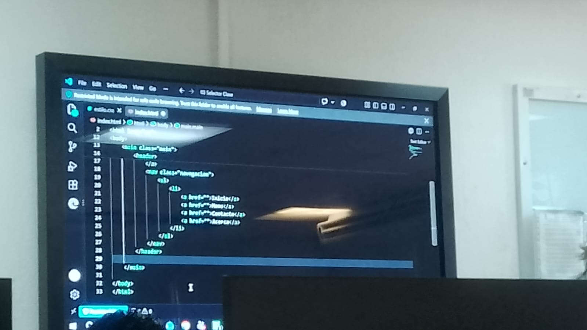

Mi nombre es Jesús Alberto Cortes García. Actualmente estudio en el área de tecnologías de la información y desarrollo de software.
Para ser sincero, lo único que no me gusta de mi carrera son las matemáticas y llegar a resolver problemas de gran dificultad. Sin embargo, sé que son parte de la formación y que debo seguir esforzándome para mejorar.
Mi objetivo es continuar aprendiendo y desarrollar las habilidades necesarias para crear aplicaciones que puedan ser útiles para las personas.

Aprender a diseñar y desarrollar sitios web mediante HTML, CSS y herramientas de desarrollo.
Mejorar mis conocimientos en el manejo de bases de datos y consultas SQL.